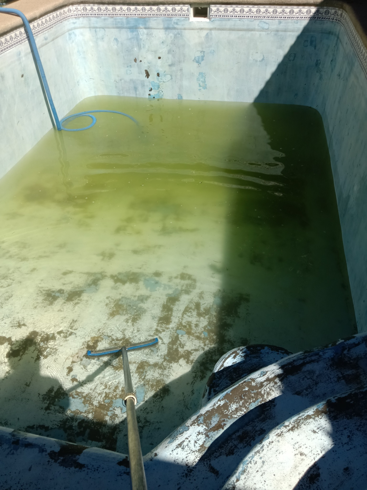
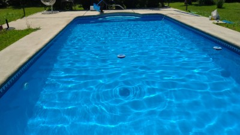

Limpieza y mantención
Servicio de limpieza, aspirado y cuidado del agua.
Servicio de limpieza, aspirado y cuidado del agua.

Revisión y reparación de sistemas de filtración.
Consultas de reparación: WhatsApp próximamente.

Trabajos para recuperar y mejorar tu piscina.
¡De agua verde a cristalina! Conoce una recuperación real de Aqua CIT.

